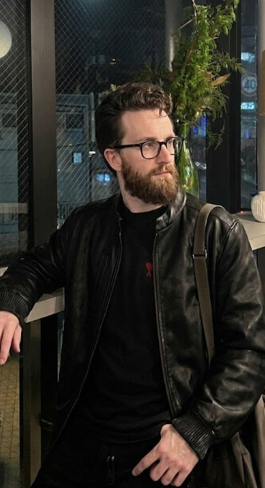

Sobre Mim
Minha formação, trajetória na área de desenvolvimento e as tecnologias com que trabalho.
Conhecer →Olá, eu sou
Procurando um desenvolvedor comum ou alguém empenhado em criar experiências digitais memoráveis? Sou desenvolvedor Front-End Júnior e acadêmico de Engenharia de Software na Unicesumar. Este portfólio reúne meus projetos e as tecnologias com que trabalho.

Minha formação, trajetória na área de desenvolvimento e as tecnologias com que trabalho.
Conhecer →Projetos reais publicados no meu GitHub, com as tecnologias utilizadas em cada um.
Explorar →Formulário para entrar em contato comigo sobre oportunidades, dúvidas ou parcerias.
Enviar mensagem →